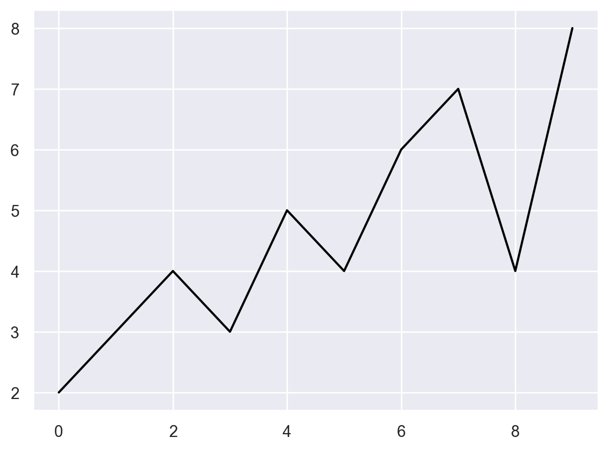
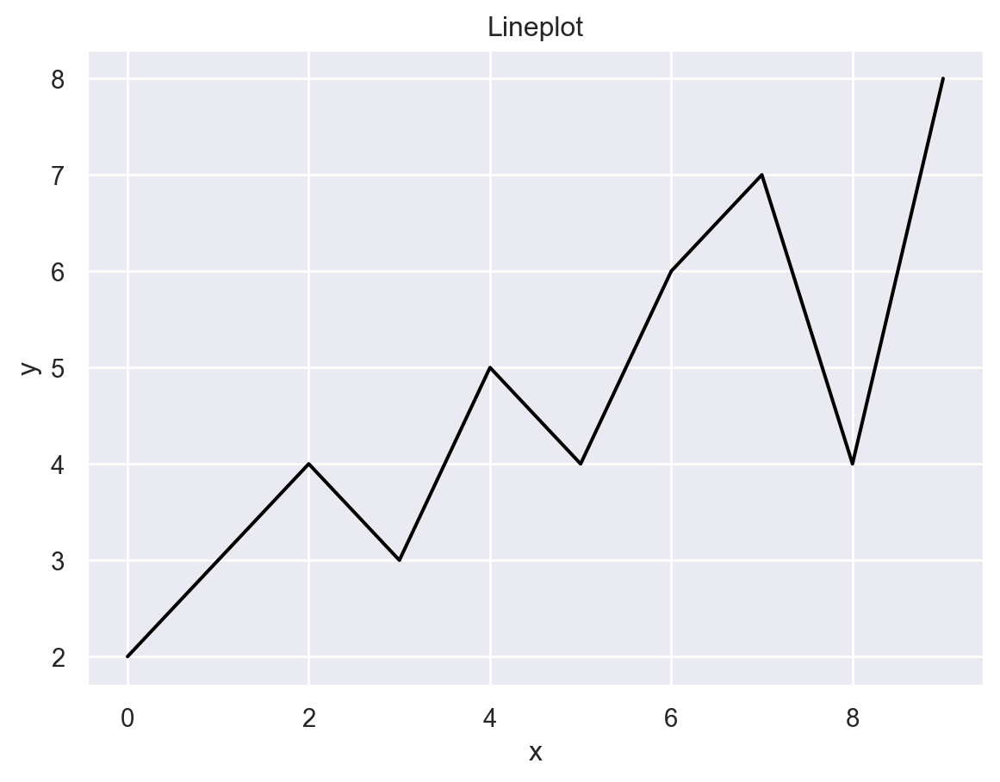
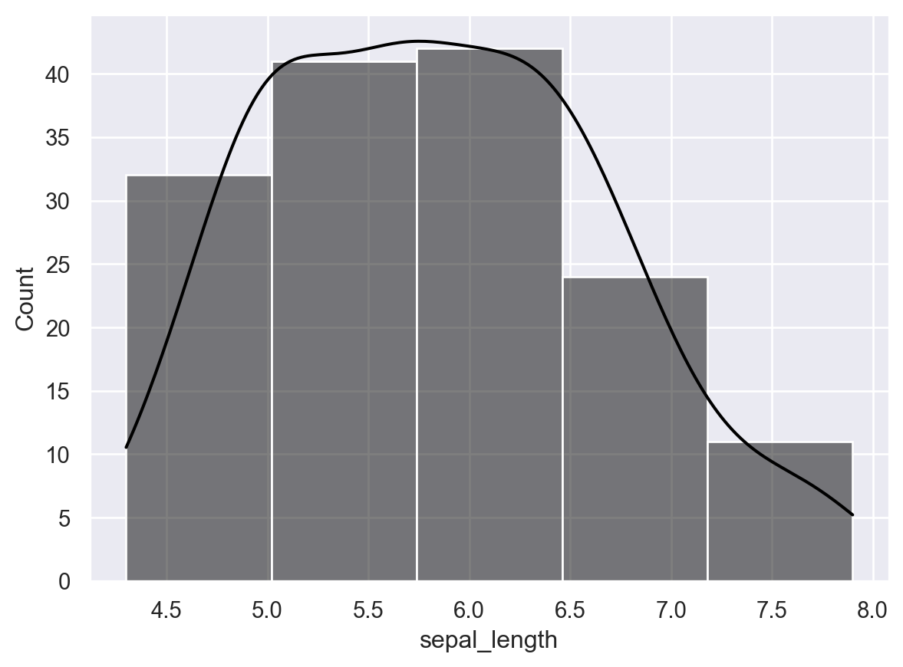
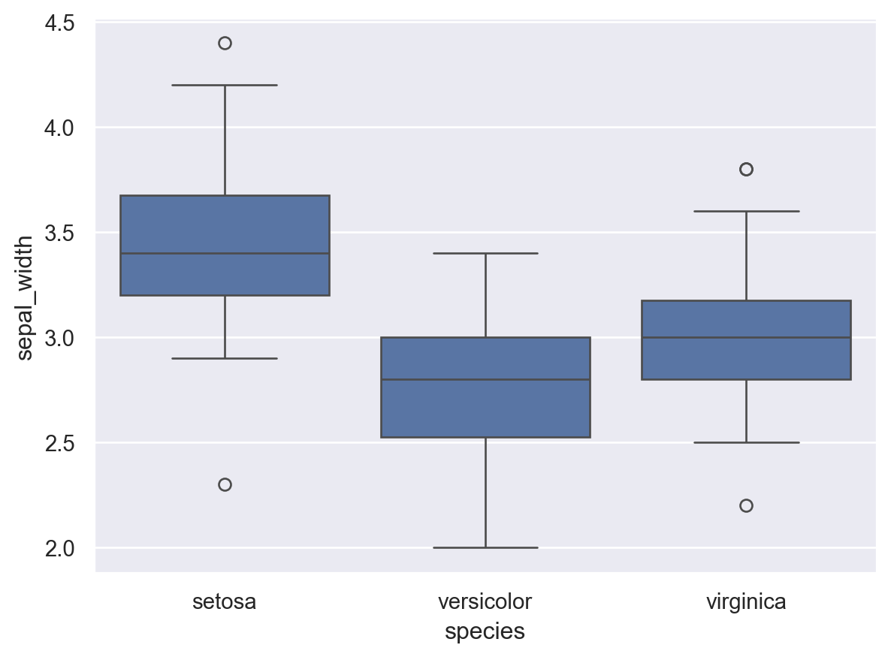
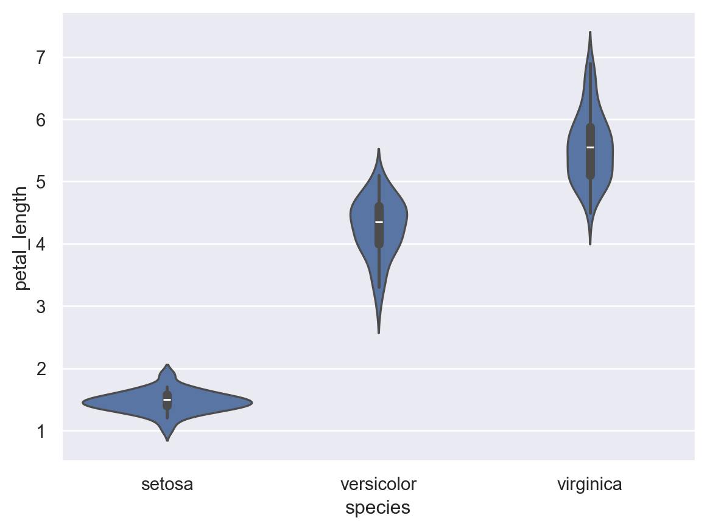
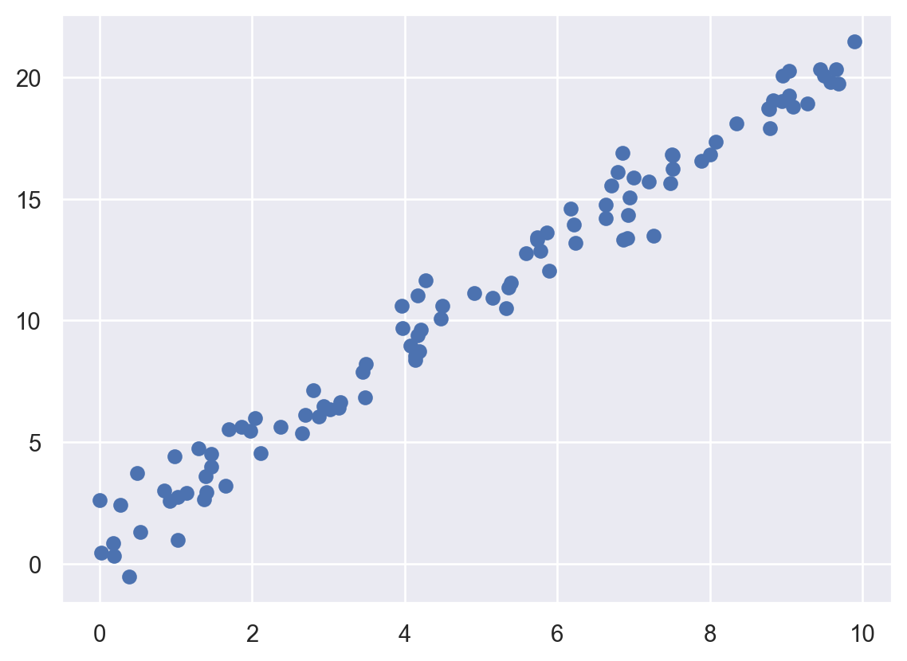
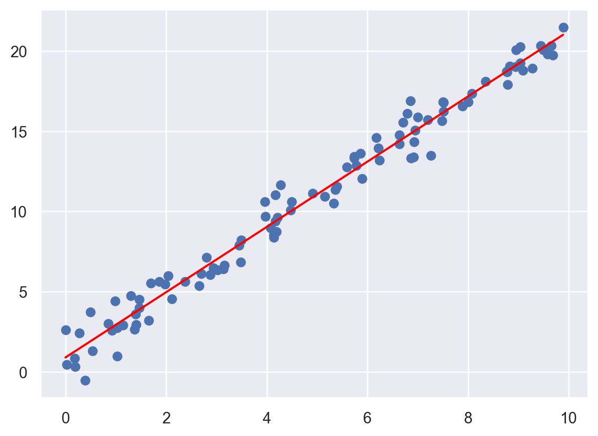
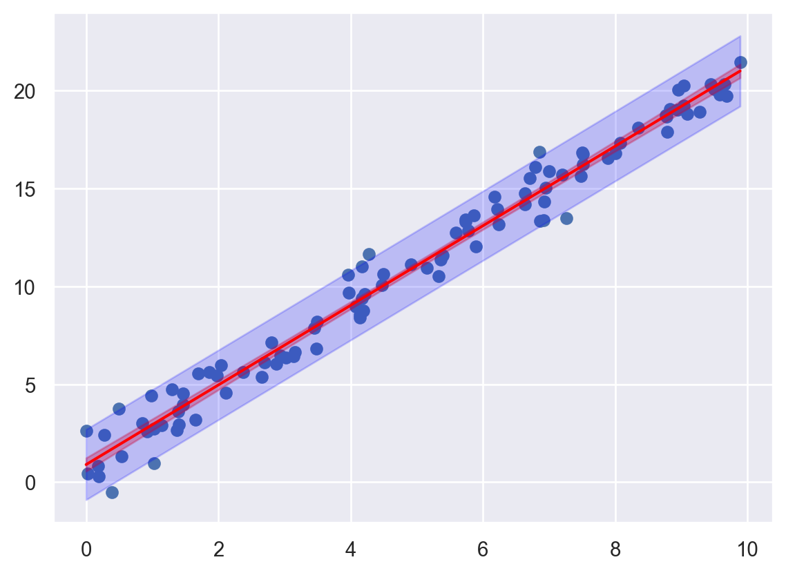
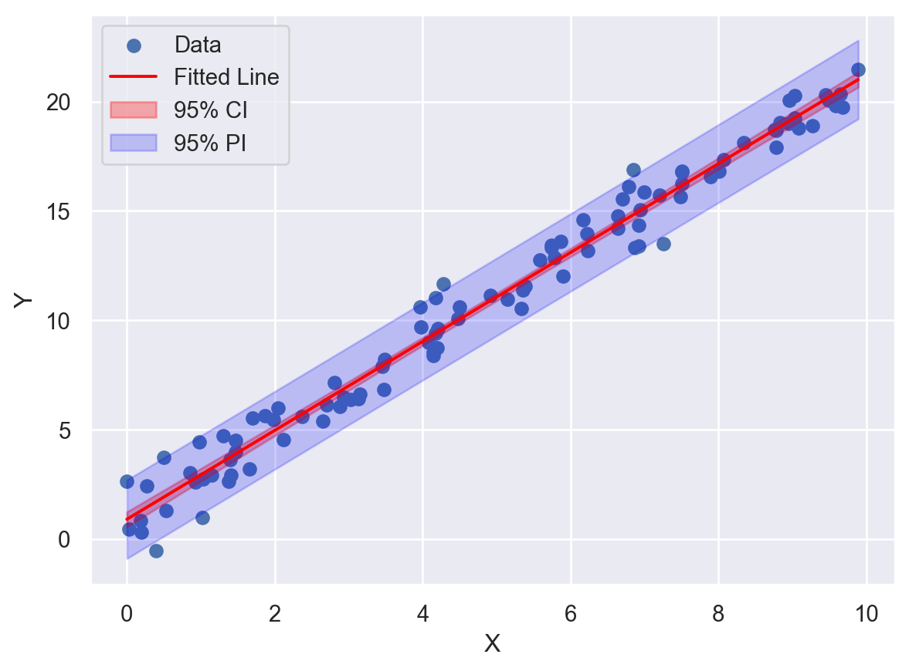
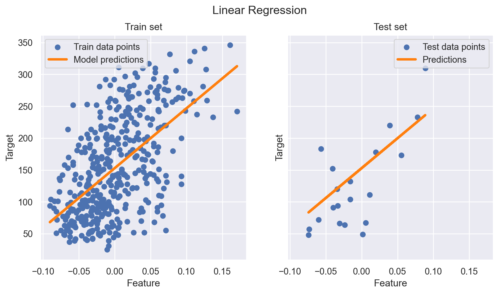

1 + 122025 인공지능과 머신러닝 중간고사에서는 구글 등 인터넷 검색, chatGPT, 교재 및 강의노트 또한 모두 이용할 수 있습니다.
다만 타인과 의논하는 행위는 금지하도록 하겠습니다.
Python과 R을 모두 이용할 수 있습니다.
또한 덧셈 등 기본적인 연산을 할 때에는 꼭 코딩을 이용하셔야 합니다. 예를 들면 1+1을 손으로 계산해서 2로 제출하는 경우에는 점수를 인정하지 않겠습니다. 다음과 같이 코딩으로 계산해야 합니다.
제한시간을 어길 경우, 즉 늦을 경우 제한시간 이내에 제출한 과제의 점수 중 최하점보다 더 낮은 점수만 획득할 수 있습니다.
각 문제별 답 코드를 작성하여 업로드해 주세요. 업로드 파일 형식은 .py, .ipynb, .r, .rmd, .qmd, .txt만 받겠습니다.
각 문제의 답이 저나 조교님의 컴퓨터에서 실행되지 않으면 점수를 부여하지 않겠습니다. 어떤 코드를 실행시키기 전에 특정 모듈을 불러와야 하는지 꼭 체크하시길 바랍니다.
현재 디렉토리가 어디인지를 항상 확인하는 것이 좋겠습니다. 데이터를 불러올때는 데이터가 파이썬 코드 파일과 같은 폴더에 있다고 가정하겠습니다.
x의 타입을 확인하시오.e의 타입을 확인하시오.squarefct라는 함수는 x를 인풋으로 받아 (x는 양의 정수가 들어온다고 가정하자) x가 0 또는 음의 정수, 문자열 등이 들어오는 상황을 생각하지 않고 (이를 예외처리 하지 않는다고 말한다) \(x^2\)을 반환하는 함수이다. 아래 코드를 이용해 squarefct 함수를 완성하시오.squarefct 함수를 반드시 이용하여 \(2^2\)을 계산하시오.absvalue라는 함수는 x를 인풋으로 받아 (x는 양의 정수가 들어온다고 가정하자) x가 0 또는 음의 정수, 문자열 등이 들어오는 상황을 생각하지 않고 (이를 예외처리 하지 않는다고 말한다) \(|x|\)를 반환하는 함수이다. if, else를 적어도 한 번 사용하여 absvalue 함수를 완성하시오.absvalue 함수를 반드시 이용하여 \(|-2.5|\)를 계산하시오.print 메소드를 이용해 아무런 인풋을 받지 않고 그냥 Hello World!를 출력하는 함수 fun2를 작성하시오.결과는 다음과 같아야 한다.
for문을 반드시 이용하여 1부터 4까지의 숫자를 순서대로 출력하시오. 예시 결과는 다음과 같다.1
2
3
4while문을 반드시 이용하여 1부터 4까지의 숫자를 순서대로 출력하시오. 예시 결과는 앞 문제와 같아야 한다.for문 또는 while문을 사용하여 *를 다음과 같이 출력하는 코드를 작성하시오.
*
**
***
****
*****x의 길이 (벡터의 원소의 갯수)를 반환하는 코드를 작성하시오.x의 여섯 번째 원소를 3으로 바꾸시오.x의 원하는 부분을 추출할 수 있다. 파이썬의 슬라이싱을 이용해 x의 두 번째, 세 번째, 네 번째 원소만을 출력하시오. 예시 결과는 다음과 같다.[2, 3, 4]dir 함수를 이용하면 x가 이용할 수 있는 객체의 목록을 보여준다.x가 이용할 수 있는 객체의 목록에 있는 메소드 중 하나를 이용해 x의 여섯 번째 원소를 제거해 길이 5인 벡터로 바꾸시오. 예시 결과는 다음과 같다.
[1, 2, 3, 4, 5]x가 이용할 수 있는 객체의 목록에 있는 메소드 중 하나를 이용해 앞서 만든 x에 7을 추가해 길이 6인 벡터로 바꾸시오. 예시 결과는 다음과 같다.[1, 2, 3, 4, 5, 7]numpy의 배열여기서부터는 반드시 numpy 모듈을 적어도 한 번 불러와야 한다.
A를 만드시오.B를 만드시오.array([[ 14, 32],
[ 32, 77],
[ 50, 122],
[ 68, 167]])concatenate 함수는 두 개의 배열을 하나로 합칠 수 있다. 다음과 같이 두 배열 A2, B2를 생성했다고 하자. axis=0 옵션을 이용하여 두 배열을 행으로 연결할 수 있다.A2=np.array([ [1,2,3],[10,20,30] ])
B2=np.array([ [4,5,6],[40,50,60] ])
np.concatenate((A2,B2),axis=0)array([[ 1, 2, 3],
[10, 20, 30],
[ 4, 5, 6],
[40, 50, 60]])axis=1 옵션을 이용하여 두 배열을 열로 연결하시오. 결과는 다음과 같아야 한다.
array([[ 1, 2, 3, 4, 5, 6],
[10, 20, 30, 40, 50, 60]])arange 함수를 이용해 다음과 같이 등차수열을 만들 수 있다.array([1, 2, 3, 4, 5])arange를 이용해 다음과 같은 등차수열을 생성하시오.
array([0.1, 0.3, 0.5, 0.7])array([2, 3, 3, 4, 4, 4, 4, 5, 5, 6])numpy의 sum 모듈을 반드시 이용해 이 배열의 총합을 구하시오.
40mean 메소드를 이용하지 않고 대신 sum과 len을 이용하여 fake_data의 평균을 구하시오. 결과는 다음과 같아야 한다.4.000scipy의 var메소드를 쓰지 않고 numpy의 sum을 이용해 fake_data의 불편분산을 구하시오. 제곱을 위해 **을 사용할 수 있다. 결과는 다음과 같아야 한다.
1.333numpy의 std 함수를 사용하여 fake_data의 불편표준편차를 구하시오. 불편표준편차를 구하기 위해서는 ddof=1로 두어야 한다. 결과는 다음과 같아야 한다.1.155numpy의 amax 메소드를 이용해 fake_data의 최댓값을 구하시오. 결과는 다음과 같아야 한다.6numpy의 median 메소드를 이용해 fake_data의 중앙값을 구하시오. 결과는 다음과 같아야 한다.4.000여기서는 SciPy 라이브러리를 추가로 이용한다. SciPy는 과학적 및 기술적 계산을 위한 파이썬 기반 오픈 소스 라이브러리로, 많은 기능들이 Numpy로 넘어갔으나 몇몇 기능을 위해 필요한 경우가 있다.
binom.pmf를 이용해 위 상황에서 나온 앞면의 수가 5일 확률을 구하시오.binom.cdf를 이용해 앞면의 수가 4 이하일 확률을 구하시오.pdf 메소드를 이용해 [0, 2, 4]에서의 t_rv의 확률밀도함수를 구하시오. 결과는 다음과 같다.
array([0.354, 0.068, 0.013])cdf 메소드를 이용해 [0, 2, 4]에서의 t_rv의 누적분포함수를 구하시오. 결과는 다음과 같다.array([0.5 , 0.908, 0.971])ppf 메소드를 이용해 확률이 0.025, 0.05, 0.95, 0.975일 때 t_rv의 분위수를 구하시오. 결과는 다음과 같다.array([-4.303, -2.92 , 2.92 , 4.303])pandas의 DataFrame여기서부터는 반드시 numpy, pandas 모듈을 적어도 한 번 불러와야 한다.
pandas에 있는 DataFrame 메소드를 이용해 다음과 같은 데이터프레임을 생성하시오. 데이터프레임을 생성할 때 변수의 이름은 example_df로 하시오. 이때 np.NaN은 결측치를 나타낼 떄 쓴다. R에서는 NA와 NaN이 존재하지만, 파이썬에서는 np.NaN으로 NA 대신 많이 쓰기도 한다.| num | name | department | age | |
|---|---|---|---|---|
| 0 | 1 | A | Statistics | 30 |
| 1 | 3 | B | Data Science | 20 |
| 2 | 2 | C | Mathematics | 40 |
| 3 | 4 | NaN | NaN | 10 |
example_df 데이터프레임의 특정 열의 이름을 바꾸려면 다음과 같이 할 수 있다. 보통은 다른 데이터프레임에 할당하는 방식으로 변형된 데이터프레임을 저장하나, 원본 데이터프레임을 변경하고 싶다면 inplace=True를 붙여줘야 한다.앞서 만든 example_df의 두 번째 열의 이름을 name에서 names로 바꾸시오. 결과는 다음과 같아야 한다.
| num | names | department | age | |
|---|---|---|---|---|
| 0 | 1 | A | Statistics | 30 |
| 1 | 3 | B | Data Science | 20 |
| 2 | 2 | C | Mathematics | 40 |
| 3 | 4 | NaN | NaN | 10 |
example_df의 행에 이름을 붙여주려면 .index 메소드를 이용할 수 있다. 이를 이용해 example_df의 행의 이름을 다음과 같이 바꿔주시오.| num | names | department | age | |
|---|---|---|---|---|
| row1 | 1 | A | Statistics | 30 |
| row2 | 3 | B | Data Science | 20 |
| row3 | 2 | C | Mathematics | 40 |
| row4 | 4 | NaN | NaN | 10 |
pandas의 DataFrame에는 다음과 같이 정렬하는 기능이 있다. 예를 들어 열 기준(axis=0) num에 대해 오름차순으로 정렬하려면 다음과 같이 하면 된다.| num | names | department | age | |
|---|---|---|---|---|
| row1 | 1 | A | Statistics | 30 |
| row3 | 2 | C | Mathematics | 40 |
| row2 | 3 | B | Data Science | 20 |
| row4 | 4 | NaN | NaN | 10 |
참고로 행 기준으로 정렬하려면 문자와 숫자가 혼용되어 있어 오류가 나지만 마지막 행만은 NaN은 무시하고 정렬하기 때문에 오류 없이 정렬이 가능하다.
| num | age | names | department | |
|---|---|---|---|---|
| row1 | 1 | 30 | A | Statistics |
| row2 | 3 | 20 | B | Data Science |
| row3 | 2 | 40 | C | Mathematics |
| row4 | 4 | 10 | NaN | NaN |
example_df 자료를 열 기준 age에 대해 오름차순으로 정렬하시오. 결과는 다음과 같아야 한다.
| num | names | department | age | |
|---|---|---|---|---|
| row4 | 4 | NaN | NaN | 10 |
| row2 | 3 | B | Data Science | 20 |
| row1 | 1 | A | Statistics | 30 |
| row3 | 2 | C | Mathematics | 40 |
ascending=False 옵션을 이용해 example_df 자료를 열 기준 age에 대해 내림차순으로 정렬하시오. 결과는 다음과 같아야 한다.| num | names | department | age | |
|---|---|---|---|---|
| row3 | 2 | C | Mathematics | 40 |
| row1 | 1 | A | Statistics | 30 |
| row2 | 3 | B | Data Science | 20 |
| row4 | 4 | NaN | NaN | 10 |
pandas의 dropna() 메소드를 이용해 결측치가 있는 행(axis=0) 또는 열(axis=1)을 삭제할 수 있다. example_df 자료에 결측치가 있는 행을 dropna() 메소드를 반드시 이용하여 삭제하시오. 결과는 다음과 같아야 한다.| num | names | department | age | |
|---|---|---|---|---|
| row1 | 1 | A | Statistics | 30 |
| row2 | 3 | B | Data Science | 20 |
| row3 | 2 | C | Mathematics | 40 |
iris 데이터다음과 같이 iris.csv 파일을 불러온다.
| sepal_length | sepal_width | petal_length | petal_width | species | |
|---|---|---|---|---|---|
| 0 | 5.1 | 3.5 | 1.4 | 0.2 | setosa |
| 1 | 4.9 | 3.0 | 1.4 | 0.2 | setosa |
| 2 | 4.7 | 3.2 | 1.3 | 0.2 | setosa |
또는 seaborn에 내장되어 있는 데이터를 사용해도 좋다. seaborn은 matplotlib를 더 편하게 사용할 수 있도록 만든 고수준 라이브러리이다.
| sepal_length | sepal_width | petal_length | petal_width | species | |
|---|---|---|---|---|---|
| 0 | 5.1 | 3.5 | 1.4 | 0.2 | setosa |
| 1 | 4.9 | 3.0 | 1.4 | 0.2 | setosa |
| 2 | 4.7 | 3.2 | 1.3 | 0.2 | setosa |
Index(['sepal_length', 'sepal_width', 'petal_length', 'petal_width',
'species'],
dtype='object')iris_data 의 행(데이터의 갯수)과 열(변수의 갯수를)의 크기를 반환하시오.DataFrame은 댜음과 같은 방법으로 일부의 column을 추출할 수 있다.iris_data 중 sepal.length, sepal.width 열만을 따로 뽑아서 iris_data_two_cols라는 변수에 저장하시오. iris_data_two_cols의 처음 세 개의 행은 다음과 같아야 한다.
| sepal_length | sepal_width | |
|---|---|---|
| 0 | 5.1 | 3.5 |
| 1 | 4.9 | 3.0 |
| 2 | 4.7 | 3.2 |
pandas에서는 loc, iloc 등을 이용해 특정 row나 column 등을 불러올 수 있다. 다음의 실행결과를 보자.| sepal_length | sepal_width | petal_length | petal_width | species | |
|---|---|---|---|---|---|
| 0 | 5.1 | 3.5 | 1.4 | 0.2 | setosa |
| 1 | 4.9 | 3.0 | 1.4 | 0.2 | setosa |
| 2 | 4.7 | 3.2 | 1.3 | 0.2 | setosa |
| 3 | 4.6 | 3.1 | 1.5 | 0.2 | setosa |
| sepal_length | sepal_width | petal_length | petal_width | species | |
|---|---|---|---|---|---|
| 0 | 5.1 | 3.5 | 1.4 | 0.2 | setosa |
| 1 | 4.9 | 3.0 | 1.4 | 0.2 | setosa |
| 2 | 4.7 | 3.2 | 1.3 | 0.2 | setosa |
iloc[:3]의 경우 <3까지의 행이 출력된 것을 볼 수 있다. 그리고 loc의 경우 colunm name을 이용해 일부 column만 추출할 수 있는데 iloc은 그렇지 않다.
| sepal_length | sepal_width | |
|---|---|---|
| 0 | 5.1 | 3.5 |
| 1 | 4.9 | 3.0 |
| 2 | 4.7 | 3.2 |
| 3 | 4.6 | 3.1 |
loc 또는 iloc을 이용해 iris_data의 처음 다섯 개 행에 해당하는 부분의 sepal_length, sepal_width, petal_length 파트만을 추출하시오. 결과는 다음과 같아야 한다.
| sepal_length | sepal_width | petal_length | |
|---|---|---|---|
| 0 | 5.1 | 3.5 | 1.4 |
| 1 | 4.9 | 3.0 | 1.4 |
| 2 | 4.7 | 3.2 | 1.3 |
| 3 | 4.6 | 3.1 | 1.5 |
| 4 | 5.0 | 3.6 | 1.4 |
species는 서로 다른 세 종의 붓꽃 명칭을 담고 있다. pandas의 unique() 함수를 이용해 서로 다른 세 종의 붓꽃 명칭을 출력하시오. 결과는 다음과 같아야 한다.array(['setosa', 'versicolor', 'virginica'], dtype=object).describe()라는 메소드가 있다. iris_data의 요약통계를 구해보고 sepal_length, sepal_width, petal_length, petal_width 중 mean이 가장 큰 변수는 무엇인지 밝히시오.| sepal_length | sepal_width | petal_length | petal_width | |
|---|---|---|---|---|
| count | 150.000000 | 150.000000 | 150.000000 | 150.000000 |
| mean | 5.843333 | 3.057333 | 3.758000 | 1.199333 |
| std | 0.828066 | 0.435866 | 1.765298 | 0.762238 |
| min | 4.300000 | 2.000000 | 1.000000 | 0.100000 |
| 25% | 5.100000 | 2.800000 | 1.600000 | 0.300000 |
| 50% | 5.800000 | 3.000000 | 4.350000 | 1.300000 |
| 75% | 6.400000 | 3.300000 | 5.100000 | 1.800000 |
| max | 7.900000 | 4.400000 | 6.900000 | 2.500000 |
iris_data에서 groupby라는 메소드를 이용해 species 별로 sepal_length, sepal_width, petal_length, petal_width 의 평균을 계산하시오. 예시 결과는 다음과 같다.| sepal_length | sepal_width | petal_length | petal_width | |
|---|---|---|---|---|
| species | ||||
| setosa | 5.006 | 3.428 | 1.462 | 0.246 |
| versicolor | 5.936 | 2.770 | 4.260 | 1.326 |
| virginica | 6.588 | 2.974 | 5.552 | 2.026 |
numpy의 cov는 공분산을 계산해준다. iris_data에서 species를 제외한 나머지의 공분산행렬을 구하시오. 결과는 다음과 같아야 한다.| sepal_length | sepal_width | petal_length | petal_width | |
|---|---|---|---|---|
| sepal_length | 0.685694 | -0.042434 | 1.274315 | 0.516271 |
| sepal_width | -0.042434 | 0.189979 | -0.329656 | -0.121639 |
| petal_length | 1.274315 | -0.329656 | 3.116278 | 1.295609 |
| petal_width | 0.516271 | -0.121639 | 1.295609 | 0.581006 |
pandas의 corr는 상관계수를 계산해준다. iris_data에서 species를 제외한 나머지의 상관계수행렬을 구하시오.| sepal_length | sepal_width | petal_length | petal_width | |
|---|---|---|---|---|
| sepal_length | 1.000000 | -0.117570 | 0.871754 | 0.817941 |
| sepal_width | -0.117570 | 1.000000 | -0.428440 | -0.366126 |
| petal_length | 0.871754 | -0.428440 | 1.000000 | 0.962865 |
| petal_width | 0.817941 | -0.366126 | 0.962865 | 1.000000 |
Matplotlib과 seabornpandas에서도 자체적인 그래픽스를 제공하기는 하지만, 여기서는 Matplotlib과 seaborn 모듈을 통해 기본적인 그래픽을 그리는 방법에 대해 살펴보기로 한다.
x, y 두 개의 배열이 있다.pyplot의 plot 함수를 이용해 다음과 같이 x와 y의 꺾은선 그래프를 그리시오.

Lineplot, x축 이름으로 x, y축 이름으로 y를 추가하시오.Text(0, 0.5, 'y')
histplot 함수를 이용해 앞서 불러왔던 iris_data 의 sepal_length에 대한 히스토그램을 그리시오. kde=True로 하여 커널 밀도함수 추정 결과를 같이 보여줄 수 있다.
iris_data에서 species에 따른 sepal_width의 상자그림을 boxplot 함수를 이용해 작성하시오.
iris_data에서 species에 따른 petal_length의 상자그림을 violinplot 함수를 이용해 작성하시오.
statsmodels뒤에 나올 scikit-learn과 비교하여, statsmodels는 보다 전통적인 통계 방법론을 다루는데 초점이 맞춰진 라이브러리이다. 여기서는 시뮬레이션 데이터를 통해 회귀분석을 하는 방법을 익혀보기로 한다.
시뮬레이션 자료는 다음과 같이 생성하기로 한다.
numpy의 random.normal 함수를 통해 독립인 정규확률변수의 실현값을 생성할 수 있다. 예를 들어, 기댓값이 1이고 표준편차가 2인 정규확률분포에서 10개의 표본을 생성하려면 다음과 같이 하면 된다.앞서 가정한 시뮬레이션 모형에 맞게, 표준정규분포를 따르는 100개의 표본을 독립적으로 생성하고 epsilon이라는 이름의 변수에 저장하시오. 예를 들어, np.random.seed(1)로 잡고 얻은 결과는 다음과 같다.
array([ 1.624, -0.612, -0.528, -1.073, 0.865, -2.302, 1.745, -0.761,
0.319, -0.249])numpy의 random.normal 함수를 통해 독립인 균등확률변수의 실현값을 생성할 수 있다. 예를 들어, 구간 \((1,2)\)에서 균등확률변수를 10개 생성하는 코드는 다음과 같다.앞서 가정한 시뮬레이션 모형에 맞게, 구간 \((0,10)\)에서 균등정규분포를 따르는 100개의 표본을 독립적으로 생성하고 x이라는 이름의 변수에 저장하시오. 예를 들어, np.random.seed(1)로 잡고 얻은 결과는 다음과 같다.
array([4.170e+00, 7.203e+00, 1.144e-03, 3.023e+00, 1.468e+00, 9.234e-01,
1.863e+00, 3.456e+00, 3.968e+00, 5.388e+00])array([0.001, 0.029, 0.183, 0.194, 0.274, 0.391, 0.5 , 0.534, 0.85 ,
0.923])numpy에서 제공하는 column_stack 함수는 배열을 여러 개 받아 각 배열을 열로 하는 2차원 배열을 생성한다. x와 x를 column_stack 함수로 결합하여 2차원 배열 X (대문자) 를 생성하시오.array([[0.001, 0.001],
[0.029, 0.029],
[0.183, 0.183],
[0.194, 0.194],
[0.274, 0.274],
[0.391, 0.391],
[0.5 , 0.5 ],
[0.534, 0.534],
[0.85 , 0.85 ],
[0.923, 0.923]])statsmodel의 add_constant함수를 이용하면 design matrix \(X\)에 상수항을 나타내는 열을 추가할 수 있다. 이를 이용해 앞서 정의한 행렬 X를 다음과 같이 업데이트 하시오.array([[1. , 0.001, 0.001],
[1. , 0.029, 0.029],
[1. , 0.183, 0.183],
[1. , 0.194, 0.194],
[1. , 0.274, 0.274],
[1. , 0.391, 0.391],
[1. , 0.5 , 0.5 ],
[1. , 0.534, 0.534],
[1. , 0.85 , 0.85 ],
[1. , 0.923, 0.923]])X에서 중복된 열을 삭제하기 위해 numpy의 delete 함수를 이용할 수 있다. 이때, 옵션으로 axis=1을 이용하면 열을 삭제할 수 있다. 중복된 열 중 하나를 삭제하여 X를 다음과 같이 만드시오.array([[1. , 0.001],
[1. , 0.029],
[1. , 0.183],
[1. , 0.194],
[1. , 0.274],
[1. , 0.391],
[1. , 0.5 ],
[1. , 0.534],
[1. , 0.85 ],
[1. , 0.923]])numpy의 dot 함수는 행렬곱을 할 수 있으며, \(\mathbf{X}\pmb{\beta}\)를 계산할 때 도움을 줄 것이다. numpy의 dot 함수를 반드시 이용하여 반응변수 벡터 y를 생성하시오.
numpy의 transpose는 전치행렬을 구해준다. 이를 이용해 \(\mathbf{X}\)의 전치행렬 \(\mathbf{X}^T\)를 구하시오.array([[1.000e+00, 1.000e+00, 1.000e+00, 1.000e+00, 1.000e+00, 1.000e+00,
1.000e+00, 1.000e+00, 1.000e+00, 1.000e+00, 1.000e+00, 1.000e+00,
1.000e+00, 1.000e+00, 1.000e+00, 1.000e+00, 1.000e+00, 1.000e+00,
1.000e+00, 1.000e+00, 1.000e+00, 1.000e+00, 1.000e+00, 1.000e+00,
1.000e+00, 1.000e+00, 1.000e+00, 1.000e+00, 1.000e+00, 1.000e+00,
1.000e+00, 1.000e+00, 1.000e+00, 1.000e+00, 1.000e+00, 1.000e+00,
1.000e+00, 1.000e+00, 1.000e+00, 1.000e+00, 1.000e+00, 1.000e+00,
1.000e+00, 1.000e+00, 1.000e+00, 1.000e+00, 1.000e+00, 1.000e+00,
1.000e+00, 1.000e+00, 1.000e+00, 1.000e+00, 1.000e+00, 1.000e+00,
1.000e+00, 1.000e+00, 1.000e+00, 1.000e+00, 1.000e+00, 1.000e+00,
1.000e+00, 1.000e+00, 1.000e+00, 1.000e+00, 1.000e+00, 1.000e+00,
1.000e+00, 1.000e+00, 1.000e+00, 1.000e+00, 1.000e+00, 1.000e+00,
1.000e+00, 1.000e+00, 1.000e+00, 1.000e+00, 1.000e+00, 1.000e+00,
1.000e+00, 1.000e+00, 1.000e+00, 1.000e+00, 1.000e+00, 1.000e+00,
1.000e+00, 1.000e+00, 1.000e+00, 1.000e+00, 1.000e+00, 1.000e+00,
1.000e+00, 1.000e+00, 1.000e+00, 1.000e+00, 1.000e+00, 1.000e+00,
1.000e+00, 1.000e+00, 1.000e+00, 1.000e+00],
[1.144e-03, 2.870e-02, 1.829e-01, 1.937e-01, 2.739e-01, 3.905e-01,
4.995e-01, 5.336e-01, 8.504e-01, 9.234e-01, 9.835e-01, 1.023e+00,
1.032e+00, 1.147e+00, 1.300e+00, 1.375e+00, 1.393e+00, 1.404e+00,
1.467e+00, 1.468e+00, 1.654e+00, 1.698e+00, 1.863e+00, 1.981e+00,
2.045e+00, 2.116e+00, 2.370e+00, 2.655e+00, 2.699e+00, 2.804e+00,
2.878e+00, 2.936e+00, 3.023e+00, 3.134e+00, 3.155e+00, 3.456e+00,
3.478e+00, 3.489e+00, 3.968e+00, 3.977e+00, 4.081e+00, 4.141e+00,
4.142e+00, 4.170e+00, 4.173e+00, 4.192e+00, 4.211e+00, 4.281e+00,
4.479e+00, 4.499e+00, 4.916e+00, 5.149e+00, 5.332e+00, 5.359e+00,
5.388e+00, 5.587e+00, 5.737e+00, 5.741e+00, 5.784e+00, 5.866e+00,
5.893e+00, 6.171e+00, 6.217e+00, 6.237e+00, 6.634e+00, 6.638e+00,
6.705e+00, 6.788e+00, 6.852e+00, 6.865e+00, 6.919e+00, 6.923e+00,
6.944e+00, 6.998e+00, 7.203e+00, 7.260e+00, 7.482e+00, 7.501e+00,
7.508e+00, 7.509e+00, 7.893e+00, 8.007e+00, 8.074e+00, 8.346e+00,
8.764e+00, 8.781e+00, 8.781e+00, 8.833e+00, 8.946e+00, 8.959e+00,
9.034e+00, 9.034e+00, 9.086e+00, 9.275e+00, 9.446e+00, 9.495e+00,
9.579e+00, 9.648e+00, 9.683e+00, 9.889e+00]])@ 연산자는 행렬곱을 의미한다. 이를 이용해 \(\mathbf{X}^T\mathbf{X}\)를 구하고 이를 XTX라는 변수에 저장하시오.numpy의 linalg.inv 함수로 역행렬을 구할 수 있다. linalg.inv 함수를 이용해 \(\mathbf{X}^T\mathbf{X}\)의 역행렬을 구하고 이를 X_inv라는 이름의 변수로 저장하시오.앞서 구했던 결과들을 활용하여, 이 자료에서 \(\hat{\pmb{\beta}}\)를 구하시오.
statsmodel 라이브러리에서는 \(\mathbf{y}\), \(\mathbf{X}\)가 주어졌을 때, 최소제곱법을 다음과 같이 구할 수 있게 해준다. 적합한 모형을 result에 저장하였다.만들어진 result 오브젝트에는 summary() 메소드를 제공하고, 이를 print함으로써 회귀분석표를 제공해준다. 회귀분석표를 출력해보고 OLS를 통해 얻은 \(\hat{\pmb{\beta}}\)이 앞 문제에서의 결과와 같은지 비교하시오.
OLS Regression Results
==============================================================================
Dep. Variable: y R-squared: 0.979
Model: OLS Adj. R-squared: 0.979
Method: Least Squares F-statistic: 4539.
Date: Sat, 29 Mar 2025 Prob (F-statistic): 6.85e-84
Time: 17:01:35 Log-Likelihood: -129.07
No. Observations: 100 AIC: 262.1
Df Residuals: 98 BIC: 267.4
Df Model: 1
Covariance Type: nonrobust
==============================================================================
coef std err t P>|t| [0.025 0.975]
------------------------------------------------------------------------------
const 0.8982 0.171 5.238 0.000 0.558 1.238
x1 2.0334 0.030 67.369 0.000 1.974 2.093
==============================================================================
Omnibus: 0.297 Durbin-Watson: 2.066
Prob(Omnibus): 0.862 Jarque-Bera (JB): 0.149
Skew: 0.094 Prob(JB): 0.928
Kurtosis: 3.018 Cond. No. 11.2
==============================================================================
Notes:
[1] Standard Errors assume that the covariance matrix of the errors is correctly specified.result 오브젝트에 t_test([0,1])을 이용하면 적합된 회귀계수가 0인지 아닌지 검정할 수 있다. t_test를 이용해 \(H_0: \beta_1 =0\)에 대한 \(t\)-검정을 진행해보고 \(\alpha=0.05\)일때 가설검정의 결과를 말하시오. Test for Constraints
==============================================================================
coef std err t P>|t| [0.025 0.975]
------------------------------------------------------------------------------
c0 2.0334 0.030 67.369 0.000 1.974 2.093
==============================================================================pyplot의 scatterplot 함수를 이용해 x와 y의 산점도를 그리시오. 예시 그림은 다음과 같다.
pyplot의 plot 함수를 이용하여 적합된 회귀직선을 그리시오. 적합된 회귀직선은 result의 fittedvalues를 이용해 가져올 수 있다.
result에 get_prediction 메소드를 적용시킨 후 summary_frame을 통해 신뢰구간과 예측구간을 추출할 수 있다.pyplot에 fill_between 함수를 이용해 신뢰구간과 예측구간을 표현할 수 있다. 앞서 그린 산점도에 신뢰구간과 예측구간을 표현하시오. 예시 결과는 다음과 같다.

plt.scatter(x, y, label='Data')
plt.plot(x, result.fittedvalues, color='red', label='Fitted Line')
plt.fill_between(x, ci_lower, ci_upper, color='red', alpha=0.3, label='95% CI')
plt.fill_between(x, pi_lower, pi_upper, color='blue', alpha=0.2, label='95% PI')
plt.xlabel('X')
plt.ylabel('Y')
plt.legend()
plt.show()
result에서 get_influence 메소드를 호출하고, 이 객체의 hat_matrix_diag 속성으로 대각원소만 추출하면 각 관찰값마다 leverage 값을 구할 수 있다. 이 모형에서 leverage의 최댓값을 구하시오.scikit-learn싸이킷런(scikit-learn)이란 파이썬에서 머신러닝 방법론을 사용할 수 있게 하는 대표적인 라이브러리이다. 여기에서는 이 라이브러리에 있는 비만 관련 자료를 이용해 보기로 한다.
import pandas as pd
import numpy as np
import sklearn
import seaborn as sns
from sklearn.datasets import load_diabetes
diabetes = load_diabetes()
diabetes.target[:3]
diabetes.data.shape(442, 10)train, test 집합으로 나누기 위해 scikit-learn의 train_test_split를 이용하기로 한다.y_train을 반응변수, x_train을 설명변수 행렬로 하여 회귀모형을 구축하고 regressor라는 변수 이름에 저장하시오. 이때 scikit-learn의 LinearRegression을 import해 사용하기로 한다.
regressor에 predict 메소드를 이용해 새로운 X에 대한 예측값을 구할 수 있다. X_test에 대한 회귀모형의 예측값들을 구하고 이를 y_pred라는 변수에 저장하시오.array([225.973, 115.748, 163.276, 114.736, 120.804, 158.22 , 236.086,
121.815, 99.568, 123.838, 204.737, 96.534, 154.175, 130.916,
83.388, 171.366, 137.995, 137.995, 189.568, 84.399])mean_squared_error를 이용해 y_test와 y_pred 사이의 mean squared error를 구하시오.
y_test와 y_pred 사이의 결정계수를 측정하는 것은 둘 사이의 상관성을 보는 것과 일맥상통한다. 다음과 같은 명령어를 이용해 예측값에 대한 r2_score 함수를 이용할 수 있다.r2_score를 이용해 y_test와 y_pred 사이의 r2_score를 구하시오.
최종적으로 이 모형에 대한 train_set, test_set에서의 결과는 다음과 같이 시각화할 수 있다.
import matplotlib.pyplot as plt
fig, ax = plt.subplots(ncols=2, figsize=(10, 5), sharex=True, sharey=True)
ax[0].scatter(X_train, y_train, label="Train data points")
ax[0].plot(
X_train,
regressor.predict(X_train),
linewidth=3,
color="tab:orange",
label="Model predictions",
)
ax[0].set(xlabel="Feature", ylabel="Target", title="Train set")
ax[0].legend()
ax[1].scatter(X_test, y_test, label="Test data points")
ax[1].plot(X_test, y_pred, linewidth=3, color="tab:orange", label="Predictions")
ax[1].set(xlabel="Feature", ylabel="Target", title="Test set")
ax[1].legend()
fig.suptitle("Linear Regression")
plt.show()